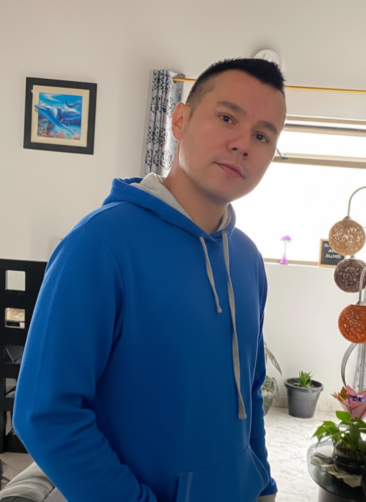

Hola, soy Wildes Jaramillo
Desarrollador Full Stack con experiencia en desarrollo de aplicaciones web empresariales. Conocimientos en Angular, Spring Boot y diversas tecnologías frontend y backend. Enfoque en buenas prácticas de desarrollo, optimización de rendimiento y trabajo en equipo.
Certificado en múltiples tecnologías de desarrollo. Especialista en procesamiento de transacciones, integración de pasarelas de pago y arquitecturas en la nube.
Tecnologías y Habilidades
Angular 14+ / RxJS
JavaScript / TypeScript
HTML5 / CSS3
Java / Spring Boot
Node.js / NestJS / Express
PostgreSQL / MySQL / MongoDB
Git / Docker / AWS
React / Vue.js
Pasarelas de Pago
Experiencia Profesional
Agosto 2022 — Presente
Full Stack Developer (Frontend Specialist)
Desarrollo de aplicaciones web empresariales con Angular 14+ y Java Spring Boot. Implementación de interfaces con Angular Material y TypeScript, desarrollo de APIs RESTful, optimización de rendimiento, integración de pasarelas de pago (Credibanco), configuración de procesos CI/CD y colaboración en equipos ágiles con revisiones de código.
Abril 2021 — Agosto 2022
Desarrollador Freelance — Independiente
Desarrollo de sistemas de gestión con Angular, implementación de dashboards y aplicaciones de reporting, creación de apps web responsivas, migración de aplicaciones legacy, implementación de autenticación/autorización e integración de APIs externas.
Mis Proyectos Destacados